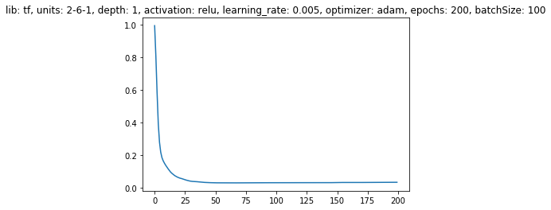
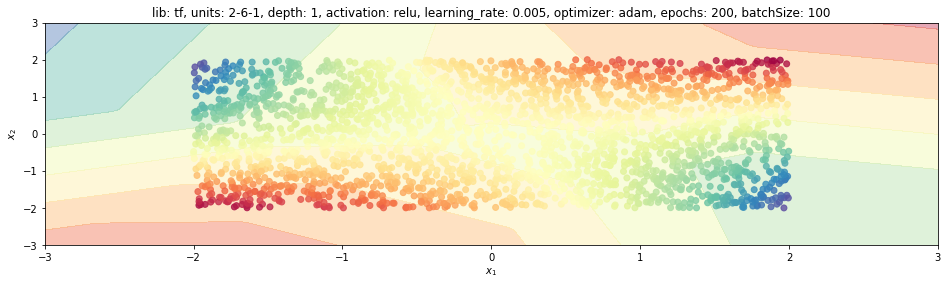
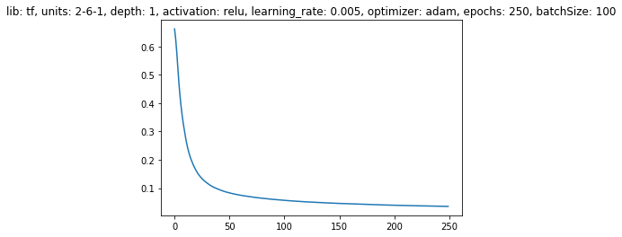

1. Introduction
This post belongs to a new series of posts related to a huge and popular topic in machine learning: fully connected neural networks.
The general series scope is three-fold:
- visualize the model features and characteristics with schematic pictures and charts
- learn to implement the model with different levels of abstraction, given by the framework used
- have some fun with one of the hottest topics right now!
In this new post, we are going to analyze how to train a neural network on toy examples with Tensorflow. If you are new to this library, please check these two posts out, 1 and 2, as well as my introductory posts that employ this library to solve linear and logistic regressions.
We are going through the following steps:
- training setting
- define the network architecture: dense layer, activation function and stack of layers
- train: loss and accuracy functions, optimizer and learning process
- visualize prediction
Point 2 implies to create a layer class with corresponding weights and biases that need to be learned during train step.
The whole code to create a synthetic dataset and learn a neural network model with any of the four libraries mentioned above is wrapped into a Python class, trainFCNN(), and can be found in my Github repo.
2. Installing and importing
First of all, we need to install this library with the pip command and to import the required package.

$ pip install numpy matplotlib tensorflow
import numpy as np
%matplotlib inline
import matplotlib.pyplot as plt
import tensorflow as tf
from keras.utils import np_utils
3. Building and training the model with TensorFlow
The third library we analyze in this series is Tensorflow (TF from now on).
So we first create the model by means of the function tfModel and afterwards we have the training process that happens within tfTrain.
The overall process of initializing hyper-parameters, creating the model graph, training the model parameters and defining the model description to easily compare different settings, is controlled with the train function, which is here reported without the if statement used to select one of the three libraries.
def train(self, nb_epochs=100, dims=[2], activation='sigmoid'):
# settings
self.LR = 0.005 # learning_rate
self.nb_epochs = nb_epochs
self.nb_batch = 100
self.activation = activation
self.dims = [2] + dims + [self.nb_class if self.kind=='multiCls' else 1]
self.nb_layer = len(self.dims)-1 # number of layers in the network with learnable parameters
self.lastActFun = 'sigmoid' if self.kind == 'binCls' else 'softmax' if self.kind == 'multiCls' else 'linear'
# graph creation and model training
self.tfModel()
self.tfTraining()
# model description
unitLabel = '-'.join([str(u) for u in self.dims])
self.description = 'lib: {}, units: {}, activation: {}, epochs: {}'.format(self.lib, unitLabel, activation, nb_epochs)
3.1 Placeholders
The very first step is to reset the default graph, which means TF clears the default graph stack and resets the global default graph.
Please have a look at this post, where a simple linear regression model is created in TF.
In principle, we’re going to tell Tensorflow that we need to have a new graph for this new model.
Every time we run the process, we need to have a new graph for this new model from scratch, without keep adding stuff to the previous graph.
This essential if we need to run the code multiple times, which is the case during development and debugging.
The second step is to define a placeholder. A TF placeholder is a variable that is going to receive data, so we need basically two placeholders, one for input and one for output.
The structure is a 2D array for both input/outputs.
The first dimension size is None because we don’t know yet how many batch examples will be fed to the model anytime it is executed.
It could be any integer greater than 0.
The second dimension is instead fixed and is the number of input units of the first layer for xx and the number of output units of the last layer for yy.
tf.reset_default_graph()
xx = tf.placeholder(tf.float32, [None, self.dims[0]])
yy = tf.placeholder(tf.float32, [None, self.dims[-1]])
3.2 Dense layers
Now we create the stack of dense layers.
This process is repeated in a for-loop nb_layer times.
In general, any layer is going to receive as inputs the output of the previous layer and the output is what is coming out of the activation function.
However, the previous layer of the first layer is actually the input itself to the network.
That’s why we are going to initialize the activation act with the input xx.
The for-loop process is similar to Keras, but in this case, it is much more verbose because we need to:
- define the structure of the weights and the biases
- get the actual output of the affine transformation
zz - select the activation function and applied that to
zzto get the actual layer output.
3.3 Parameters
We are going to use tf.Variable from TF to define a parameter.
This is just to tell TF that whatever is stored inside is something that we want to learn.
Afterwards tfTrain is going to change those variables to minimize the loss.
We use a dictionary for parameters prms, since there are as many weights and biases variables as the number of layers.
The first variable is used for weights, which we initialize using a random normal distribution.
We want weights to be 2D arrays, whose size is the number of inputs and the number of outputs.
For a network of size dims=[2, 3, 5, 6], the first layer should transform 2 inputs to 3 units, the second layer should transform 3 inputs to 5 outputs and so on so forth.
This is what we can get from dims[kk] and dims[kk+1] for the kk layer.
dIn, dOut = self.dims[kk], self.dims[kk+1]
Since we want to use the Xavier initialization (please have a look at this post for further details)
we are going to set the standard deviation stddev to be equal to:
$$ \sigma = \frac{2}{dIn+dOut} $$
where dIn and dOut are the number of inputs and outputs of the current layer, respectively.
The second variable is used for bias.
We initialize it as a zeros-array with a size equal to the number of output units dOut.
prms['W'+str(kk)] = tf.Variable(tf.random_normal([dIn, dOut], stddev=2/(dIn+dOut)), name='W' + str(kk))
prms['b'+str(kk)] = tf.Variable(tf.zeros([dOut], name='b' + str(kk)))
A different way to create learnable parameters in TF is by using the get_variable method, as follows:
prms['W'+str(kk+1)] = tf.get_variable('W'+str(kk+1), [dIn, dOut], initializer=tf.contrib.layers.xavier_initializer())
We need to define the affine transformation:
$$ z = W_{k}\cdot a^{k-1} + b_k $$
We take the previous activation $a^{k-1} \equiv$ act_prev, we multiply by the weights array $W_{k} \equiv$ prms["W"+str(kk)] and sum elementwise to bias $b_k \equiv$ prms["b"+str(kk)]
zz = tf.matmul(act_prev, prms["W"+str(kk)]) + prms["b"+str(kk)]
The activation coming from the previous layer act_prev is a 2D array with number of samples as rows and number of inputs into the current layer as columns.
The current weight array has instead the number of inputs as rows and number of outputs as columns.
The matrix multiplication matmul returns the number of samples as rows and the number of outputs as columns.
3.4 Activation function
We use the same logic as previously used for Keras to define the activation function.
It can be either the user-defined activation or the activation function specified for the last layer.
Any of the activation functions available to the user can be found in the tf.nn module.
The activation function is going to take the output of the previous layer, zz, and return its own output into act.
actFun = self.activation if kk<self.nb_layer-1 else self.lastActFun
if actFun == 'relu':
act = tf.nn.relu(zz)
elif actFun == 'sigmoid':
act = tf.nn.sigmoid(zz)
elif actFun == 'tanh':
act = tf.nn.tanh(zz)
elif actFun == 'softmax':
act = tf.nn.softmax(zz)
elif actFun == 'linear':
act = zz
4. Loss function
This step is meant to define the loss function.
We have three different cases:
- regression: we use mean square error from
tf.lossesand we have to say what is our predictionpredictions, which is actually what is coming out of the last activation, andlabels, which is the ground-truthyy. - binary classification: we’re going to use sigmoid cross-entropy
sigmoid_cross_entropy_with_logitswith logits. That’s why we do not take the last activation output but the lastzzinstance. - multi-classification: we use softmax cross-entropy
softmax_cross_entropy_with_logits_v2. You’re recommended to use the latest version because the previous onesoftmax_cross_entropy_with_logitswill be deprecated soon.
Afterwards, we have to take the mean with respect to samples with tf.reduce_mean() to get the final loss, which is what we want to minimize with respect to parameters prms with the optimizer object.
if self.kind == 'regr':
loss_ = tf.losses.mean_squared_error(labels=yy, predictions=zz)
elif self.kind == 'binCls':
loss_ = tf.nn.sigmoid_cross_entropy_with_logits(labels=yy, logits=zz)
elif self.kind == 'multiCls':
loss_ = tf.nn.softmax_cross_entropy_with_logits_v2(labels=yy, logits=zz)
else:
pass
self.loss = tf.reduce_mean(loss_, name='loss')
5. Optimizer
The optimizer is going to take care of the learning process. According to the kind of optimizer we choose, it is going to use a specific strategy to optimize the network parameters step by step. The list of different optimizers can be found here and a detailed review of those methods has been published in this great post.
We can use any of these SGD, Adam, RMSProp or Adagrad optimizers, in which we can specify the learning rate LR, and then append the minimize method with respect to loss.
if self.opt=='sgd':
optimizer = tf.train.GradientDescentOptimizer(learning_rate=self.LR, name='sgdOpt')
elif self.opt=='adam':
optimizer = tf.train.AdamOptimizer(learning_rate=self.LR, name='adamOpt')
elif self.opt=='rmsprop':
optimizer = tf.train.RMSPropOptimizer(learning_rate=self.LR, name='rmspropOpt')
elif self.opt=='adagrad':
optimizer = tf.train.AdagradOptimizer(learning_rate=self.LR, name='adagradOpt')
self.optimizer = optimizer.minimize(self.loss)
If we have a multi-class problem, we have to perform the same step that we did for Keras.
Let’s retrieve the last activation act that gives us the distribution of probabilities over classes and take the maximum probability index over columns.
That’s why we have to say axis=1, the maximum index has to be column-wise.
Finally, for a classification problem, we do also want to have an accuracy metric.
We take the prediction and the actual output and we count how many time they are equal, i.e., they match each other. Accuracy is just the average of correctly predicted outputs.
if self.kind == 'multiCls':
self.y_pred = tf.argmax(act, axis=1)
y_act = tf.argmax(yy, axis=1)
else:
self.y_pred = act
y_act = yy
if self.kind in ['binCls', 'multiCls']:
self.correct_pred = tf.equal(tf.round(self.y_pred), y_act, name='correct_pred')
self.accuracy = tf.reduce_mean(tf.cast(self.correct_pred, tf.float32), name='accuracy')
self.xx, self.yy, self.prms = xx, yy, prms
6. Training
The final step is the training process, where TF is going to actually play with data. This is the computational step that requires some time and hardware resources such as GPUs.
So far nothing has been calculated, we have just created the graph structure.
We initialize every variable, basically weights and biases, using the model settings and then start a new session with tf.Session().
Session() is the process itself that TF is going to use to actually train the model.
But in general, it is not related to the learning step by default, it just uses the TF graph to compute the outputs we need to get, given a set of inputs that will be fed to the graph via the feed_dict attribute.
The session is going to let the model learn only when we run() the session by calling the training object, self.optimizer, that aims at minimizing the loss wrt the parameters.
Within the new session instance sess, we first initialise the model parameters with sess.run(init) and then train the model for as many epochs nb_epochs and many batches nb_pnt//nb_batch we have initially specified.
We use our self-made nextBatch function that selects the next batch of nb_batch examples at every iteration jj from the entire dataset and feeds the input/output batch to the model to get the current loss and the new weights.
def nextBatch(self, jj, XX, YY):
Xb = XX[jj*self.nb_batch:(jj+1)*self.nb_batch, :]
Yb = YY[jj*self.nb_batch:(jj+1)*self.nb_batch, :]
return Xb, Yb
At the end of each epoch, we store the current loss into the lossHistory history variable.
When the outer for loop is completed, we need to save the current model weights before quitting the with statement, which would terminate the session.
We would lose everything, and that’s something we do not want to happen, especially after having waited for hours!
That’s why we run the model again to get the list of model parameters’ values nn_prms and the prediction nn_Ygrd corresponding to the input coming from the grid XXgrd.
For a multi-class problem, we have to also transform the YYgrd response to a one-hot encoding, as we did for Keras.
That is an easy task, with the available method to_categorical.
def toOneHotEncoding(self, YY):
# transform the response variable to an one-hot-encoding representation
if self.kind == 'multiCls':
YYohe = np_utils.to_categorical(YY, num_classes=self.nb_class)
return YYohe
else:
return YY
The entire process is executed within the tfTraining function.
def tfTraining(self,):
# training the tensorflow model
YY = self.toOneHotEncoding(self.YY)
init = tf.global_variables_initializer()
with tf.Session() as sess:
sess.run(init)
lossHistory = []
for kk in range(self.nb_epochs):
for jj in range(self.nb_pnt//self.nb_batch):
Xb, Yb = self.nextBatch(jj, self.XX, YY)
mdl_loss, _ = sess.run([self.loss, self.optimizer], feed_dict={self.xx: Xb, self.yy: Yb})
lossHistory.append(mdl_loss)
if kk==self.nb_epochs-1:
print('The final model loss is {}'.format(mdl_loss))
self.lossHistory = np.array(lossHistory)
self.nn_prms = sess.run(list(self.prms.values()))
self.nn_W0 = sess.run([self.prms['W0']])
self.nn_Ygrd = sess.run(self.y_pred, feed_dict={self.xx: self.XXgrd, self.yy: self.toOneHotEncoding(self.YYgrd)})
7. Visualize some results
7.1 NN model with a regression problem
We visualize the loss history and the model prediction throughout the 2D grid for a regression problem (a polynomial function).
tnn = trainFCNN(nb_pnt=2500, dataset='polynom')
tnn.train(lib='tf', dims=[6], activation='relu', nb_epochs=200, lr=0.005)
The final model loss is 0.03229020908474922
plt.plot(tnn.lossHistory)
plt.title(tnn.mdlDescription());

tnn.plotModelEstimate(figsize=(16, 9))

7.2 NN model with binary classification
We visualize the loss history and the model prediction throughout the 2D grid for the stripe problem (binary-classification).
tnn = trainFCNN(nb_pnt=2500, dataset='stripe')
tnn.train(lib='tf', dims=[6], activation='relu', nb_epochs=250, lr=0.005)
The final model loss is 0.035296984016895294
plt.plot(tnn.lossHistory)
plt.title(tnn.mdlDescription());

tnn.plotModelEstimate(figsize=(16, 9))